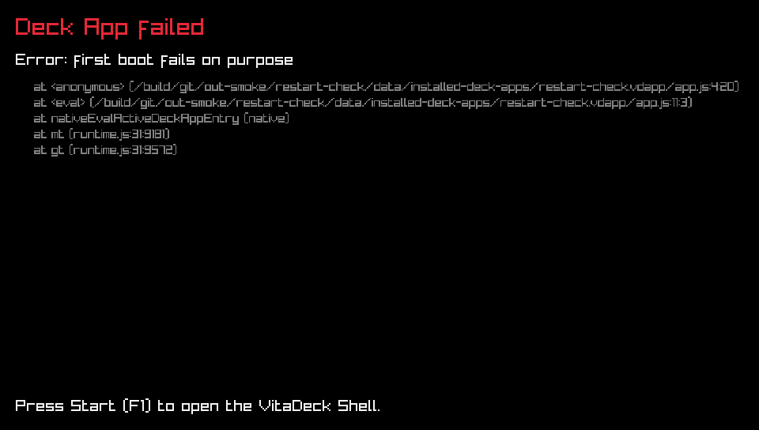
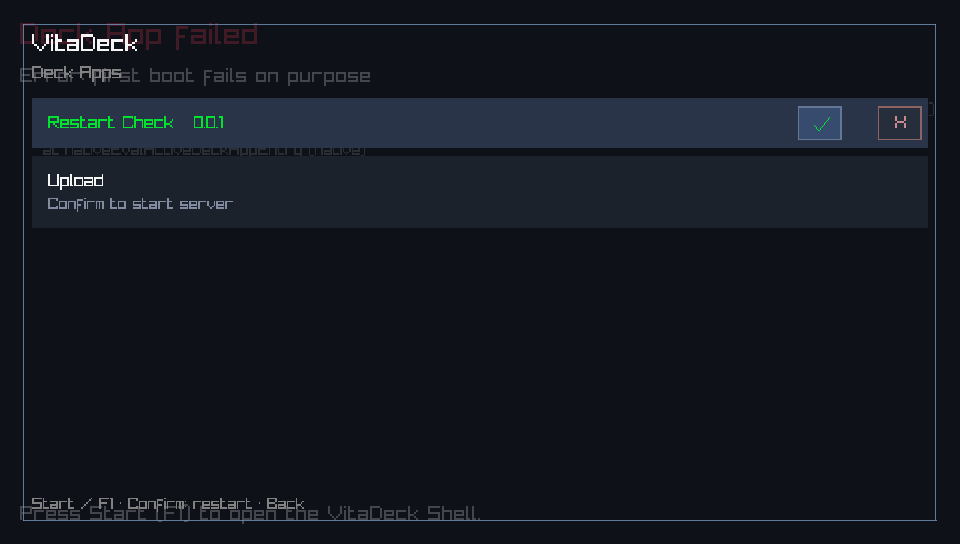
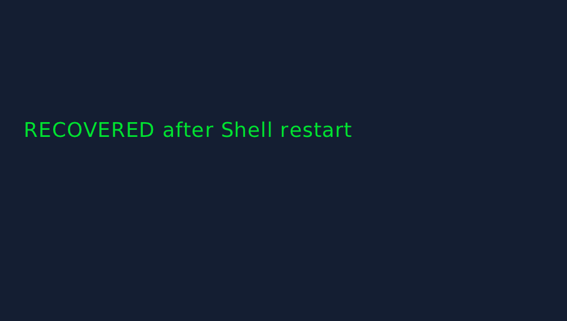

PR #112: Shell restart of the Active Deck App (Linux Docker, Xvfb)
A throwaway Deck App throws on first boot and renders on later boots (flag in Deck App Storage).
1. Deck App Failure Screen

2. Start (F1): Shell, active row focused, footer reads "Confirm: restart"

3. Confirm (Enter): fresh JS context, app recovered, Shell hidden
